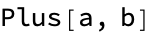

What exactly are expressions?
Expressions are built by combining more basic expressions into more complicated expressions
e.g.
can be thought of as being made up of expressions for a, b, and +
So a complicated expression can be broken down into simpler expressions
At a certain point, we obtain simple, irreducible expressions that cannot be broken down anymore
These irreducible expressions are called atoms
There are three main kinds of atoms:
Numbers
Strings
Symbols
We have seen many examples of numbers: these can be integers or inexact (floating point) numbers
Strings are more-or-less self-explanatory:


Symbols are what distinguish Mathematica from other kinds of languages
In the example above, a and b are symbols
The + sign is also a notation for the Plus symbol
We can decompose an expression into its atoms using FullForm

Variables and expressions
Here we begin to see what makes Mathematica different
Unlike in Julia, variables may be used before they are assigned a value
Mathematica will manipulate the expression with variables held in an unevaluated form
Mathematical expressions
Using variables in this way lets us manipulate mathematical objects such as equations and polynomials
Note: using some shortcuts, you can use “fancy” notation in input cells (e.g. superscripts for powers, fractions for division, etc.)

Creating and assigning variables
Variables are assigned using the equal sign = (Set)
lhs = rhs
will evaluate the expression ‘rhs’ and assign the result to ‘lhs’. The right-hand side can be any Mathematica expression
Variables can be unset using Clear
Brackets
There are four kinds of bracketing in Mathematica:
(Parentheses) for grouping mathematical expressions
[Square brackets] for functions calls
{Braces} for lists
[[Double brackets]] for indexing
Algebraic manipulation and simplification
This is one of the most powerful features of Mathematica
In particular, Simplify is one of the most useful single functions
Sometimes FullSimplify can simplify more complicated expressions (using an expanded set of rules)

The percent symbol can be used as a shortcut for the output of the last expression
Substitution rules
Given an expression such as:
We can evaluate this expression with the variables replaced by numbers (or any other expressions) using substitution rules
The replacement operator is typed slash-dot, and rules are typed ->
Multiple substitutions can be made at once using lists of rules
More algebraic manipulations
Simplify tends not to make assumptions about the variables

Assumptions can be provided as a second argument to Simplify:
Algebraic expressions can be analyzed programmatically:
Example: binomial theorem
Recall the binomial theorem:

Mathematica immediately simplifies using this identity:
We can evaluate for a specific n using a replacement rule
Equations
Just like in Julia, equality is tested with ==
Equations are themselves Mathematica expressions
Equations can be solved using Solve
NSolve (for “numeric solve”) will look for numeric rather than symbolic solutions

For linear, quadratic, cubic, and quartic polynomials, Mathematica will always give a closed-form solution
Some equations do not admit closed-form solutions

You can also solve for simultaneous systems of equations
Set and SetDelayed
Up until now, we have assigned expressions to variables using =, which is called Set
Whenever we write lhs = rhs, the rhs is evaluated immediately
Sometimes we don’t want to evaluate the rhs immediately. Instead, we want to wait until we encounter lhs somewhere else in our program. When we encounter lhs, it is replaced by rhs and only then evaluated
This is denoted SetDelayed, and is written :=
For example, we will use Set for x, and SetDelayed for y